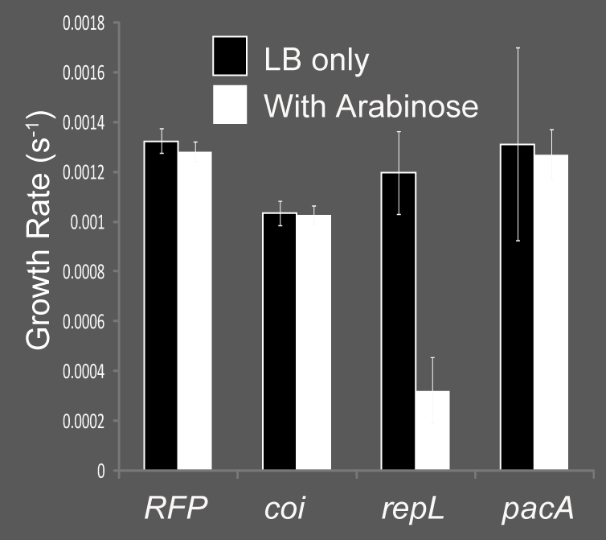
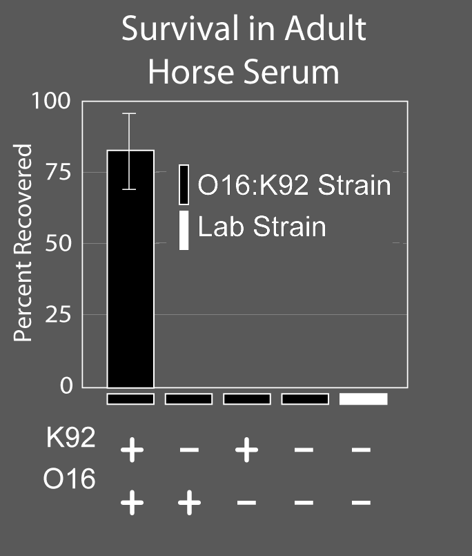

Microbiological assays are whole cell assays that monitor some non-chemical process in the cell.
Section divider: Microbiological Assays. A petri dish of soft agar with several cloudy, spreading bacterial colonies.
Measuring Toxicity
Following OD_600 over time provides a growth rate. When compared to wild-type cells, toxicity can be inferred.

Cell growth is one such phenomenon. By measuring optical density as absorbance at 600nm, you can follow the growth a cell culture over time. The first derivative of this trace is the growth rate. In this experiment, we individually place three different protein components of a genetic device under the Pbad promoter and monitor the cells growth as a function of time with and without arabinose induction. An examination of the growth rates shows the RepL is clearly toxic to the cell upon induction, and this knowledge is useful for debugging the circuit.
Following OD_600 over time provides a growth rate, and comparing it to wild-type cells lets toxicity be inferred. Three constructs are shown, each placing one gene — coi, repL or pacA — under the P-BAD promoter.
Devices affecting viability
Mammalian serum (non-cellular component of blood) contains complement. It kills bacteria.
Introduction of K92 and O16 devices place carbohydrate polymers on the surface of E. coli and mask the surface
In this experiment, bacteria are incubated in horse serum and then plated on LB plates
Colonies are counted and plotted

Genetically-encoded processes have naturally evolved to improve the fitness of their organism in some environment. By placing the organism in this environment you can monitor the function of the process by virtue of the organism’s growth. Here we are monitoring the expression of capsular polysaccharides which are
Two bullets: mammalian serum, the non-cellular component of blood, contains complement, which kills bacteria; and introducing the K92 and O16 devices places carbohydrate polymers on the surface of E. coli and masks the surface.
Chemotaxis/Swarming Assays
PMID: 17480075
Beyond growth, there are other processes that organisms do that can be monitored to observe the behavior of a cellular process. Here, we look at chemotaxis using a swarming assay. Agar medium is prepared with only a small amount of agar resulting in very soft petri dishes. A small spot of bacteria is placed in the middle of the dish and then incubated for several hours. If the bacteria have intact chemotaxis processes, they will swim outwards from the center of the plate forming a clouding circle. The diameter of the circle is an indirect measure of functionality. In this particular experiment, they have constructed an E. coli strain with an aptamer controlling the CheZ gene. CheZ is a protein required for chemotaxis to happen. By occluding the ribosome binding site in front of CheZ with an aptamer that binds theophylline, the expression of CheZ is dependent on the concentration of theophylline. Thus, addition of the small molecule results in more effect swarming. By doing this assay with many concentrations of theophylline and the related-but-not-functional compound caffeine, they obtain a transfer function relating input concentration of the molecule to the cells output behavior.
A theophylline aptamer controlling CheZ: without theophylline the ribosome binding site is paired, CheZ is not expressed and cells tumble; with theophylline the RBS is unpaired, CheZ is expressed and cells run and tumble. Source: PMID 17480075.
Adhesion Assays
Adhered bacteria are detected by outgrowth (OD measurement) or staining
Another microbiological behavior is adhesion. Bacteria often stick to surfaces including the surfaces of other cells like human gut epithelial cells Though it is not synonymous with biofilm formation, it is a highly related phenomenon. One way to quantify it involves microplate-based adhesion assays. In this example, we are monitoring the adhesion of bacteria to mannan, a carbohydrate resembling the surfaces of mammalian epithelial cells, via type I pili.
A scanning electron micrograph of bacteria attached by pili to a cell surface.